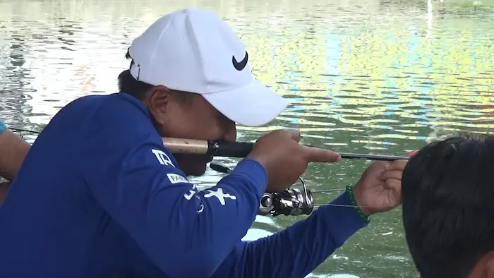
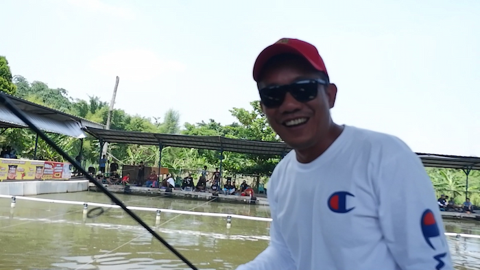

Banyak pemancing sering gagal mengangkat ikan mas berukuran babon karena teknik pengendalian tekanan yang kurang tepat. Ikan mas besar memiliki tenaga meledak di awal strike, sehingga membutuhkan kontrol yang stabil dan sabar.
1. Kenali Pola Tarikan Ikan Mas Besar
Ikan mas ukuran 4–7 kg biasanya tidak langsung kabur jauh, namun melakukan tarikan pendek tapi kuat. Pada fase ini, pemancing harus menjaga ujung joran tetap lentur mengikuti arah tarikan.
2. Atur Drag di Level Aman
Drag yang terlalu kencang membuat kail mudah lepas, sedangkan drag terlalu longgar membuat ikan babon bebas lari. Setting ideal drag adalah sekitar 30–40% dari kekuatan line yang digunakan.
3. Gunakan Teknik “Pump and Wind”
Tarik joran ke atas perlahan (pump), lalu gulung saat joran diturunkan. Ini cara paling aman mengontrol ikan besar tanpa memaksa reel bekerja penuh.
4. Sabar Saat Ikan Melakukan Larian Kedua
Babon ikan mas sering melakukan larian kedua ketika mendekati pinggir kolam. Jangan panik — biarkan line keluar sedikit sambil menjaga posisi joran sekitar 45 derajat.
5. Angle Joran Wajib Tepat
Posisi joran yang aman adalah 35–60 derajat. Jika terlalu tinggi, joran rawan patah. Jika terlalu rendah, tekanan pindah penuh ke line.
Kesimpulan
Kunci utama narik ikan mas babon adalah: teknik, sabar, dan kontrol drag. Dengan kombinasi yang tepat, peluang mengangkat ikan ukuran monster bisa meningkat hingga dua kali lipat.